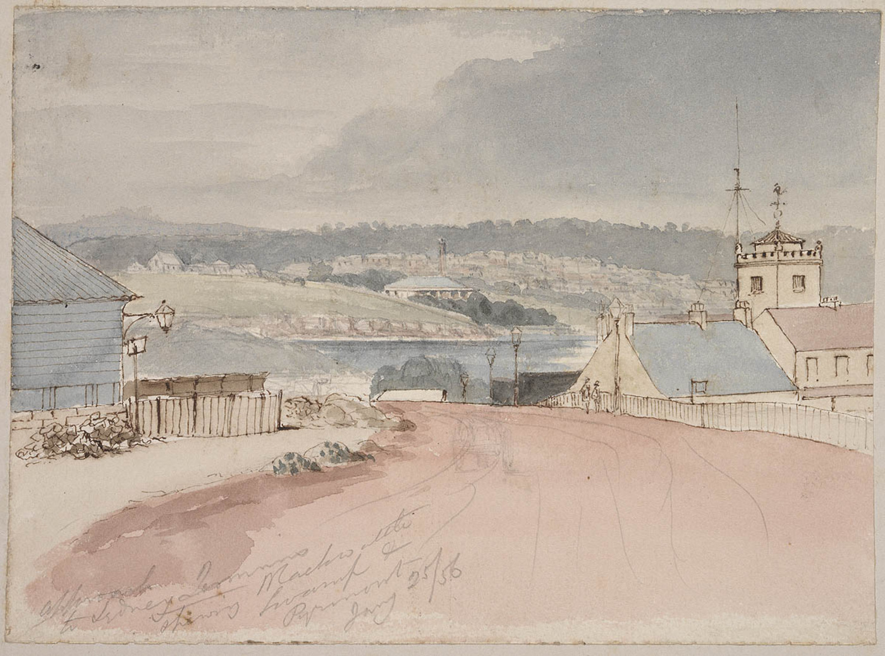

Home > Buildings > Streets/Places
Streets/Places
Blackwattle Swamp and Creek
Blackwattle Swamp sits at the head of Blackwattle Bay around Glebe. Before European settlement, the Blackwattle Creek fed into Blackwattle Swamp from the swampy lands around where Sydney University sits today. The creek was a significant source of fresh water for the Indigenous people who lived in the area.
From the early 2000s onwards, archaeological discoveries have been made around Blackwattle Swamp and Creek that speak to the lives of the Indigenous people who once lived on the banks. Tools and other various artefacts have been found at multiple campsites in the area, including one made of green bottle glass, proving that people were using the area after European colonisation. It's hopeful that further discoveries and excavations will be made in the future.
After Europeans settled in Sydney, the creek began to be heavily used for industry. The old brewery on Broadway was built where it is in order to use the creek's fresh water.
In the 1850s, a canal was built to restrain Blackwattle Creek. Around this time, Blackwattle Swamp was reclaimed and built over. The creek/canal was capped to form an underground tunnel in 1879, making it unaccessible to the public. Parts of this tunnel were connected to an old convict-built tunnel from the 1850s, the second-oldest built tunnel in Australia.
These tunnels have been developed and made more complex over time. Today the Blackwattle Creek flows through the Blackwattle Bay sewer/stormwater system into Blackwattle Bay.
For more info: